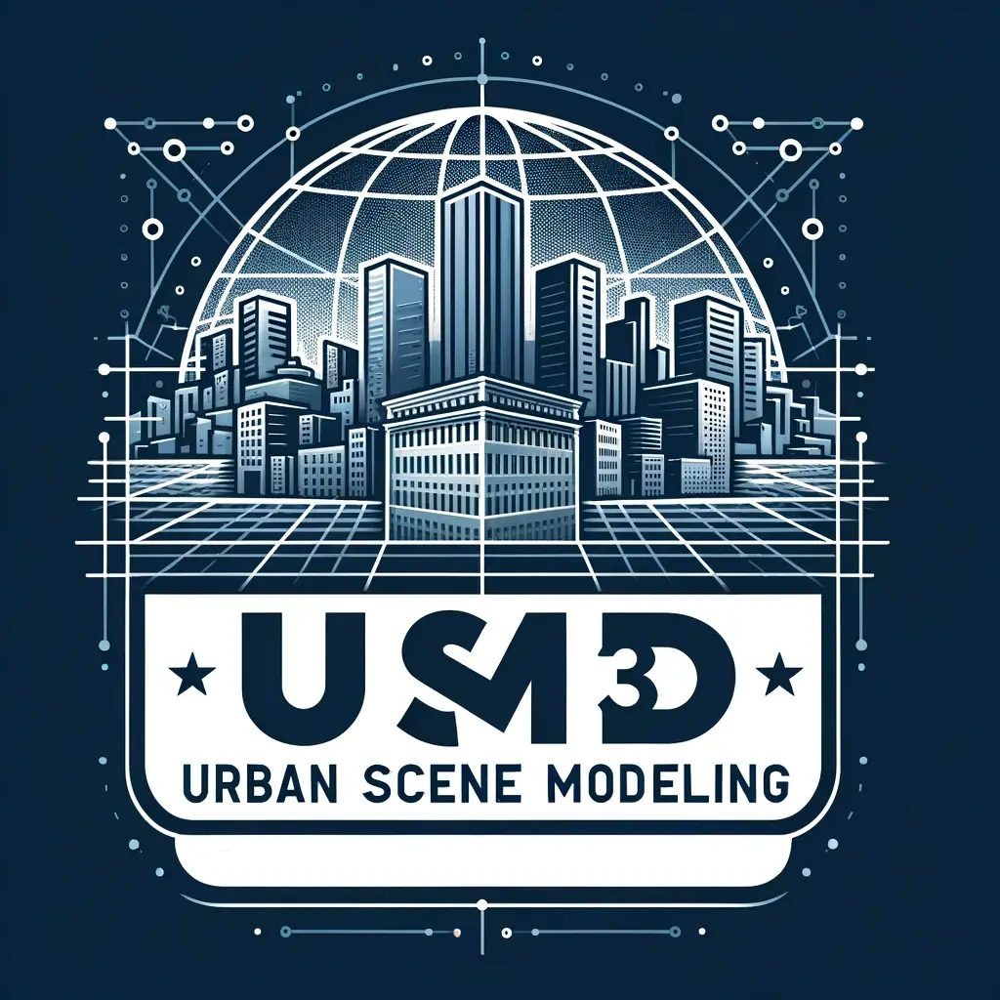

Daoyi Gao

I am a PhD student at the 3D AI Lab at the Technical University of Munich.
Previously, I graduated from the master's program Robotics, Cognition, Intelligence at TUM.
My research interests are in the field of 3D computer vision, CAD-driven scene understanding, and 3D generative modeling.
Publications
Workshops
-

Teaching
- Teaching Assistant, Machine Learning for 3D Geometry (IN2392)
WS 2023/2024, SS 2024, WS 2024/2025, SS 2025, WS 2025/2026, SS 2026, WS 2026/2027 - Teaching Assistant, Techniques in Artificial Intelligence (IN2062)
WS 2021/2022 - Teaching Assistant, Introduction to Deep Learning (IN2346)
SS 2020, WS 2020/2021 - Teaching Assistant, Block Seminar Hands-on Deep Learning
SS 2020